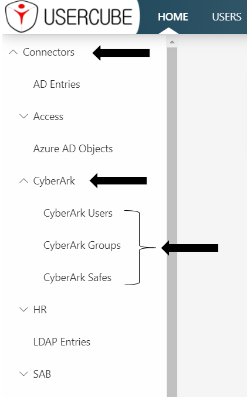
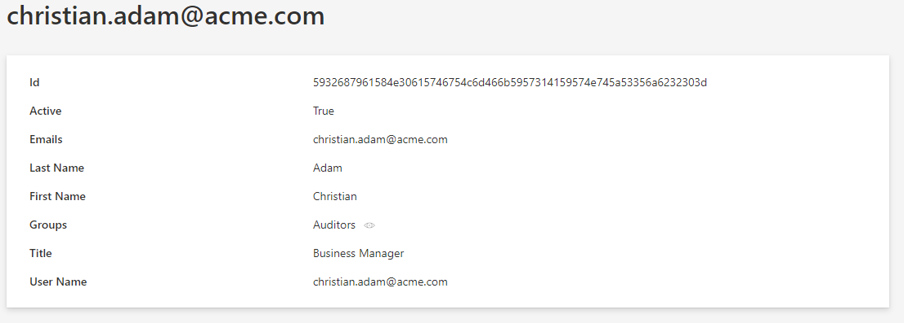
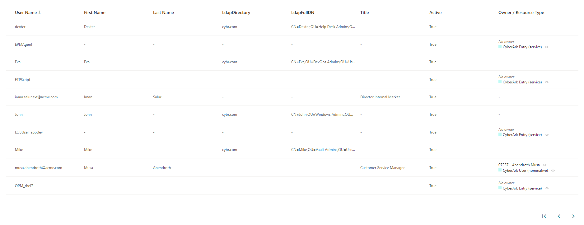

Export CyberArk Data via SCIM
This guide shows how to set up a SCIM connector to extract data from your CyberArk instance into CSV source files that will in turn be fed to the Upward Data Synchronization task and to your Identity Manager resource repository. It will focus on registering Identity Manager within the target CyberArk instance, configuring the connector, and building the job to perform regularly scheduled synchronization.
Prerequisites
External system configuration
Usually CyberArk provides the environment to use AAM (Application Access Manager) and SCIM (System for Cross-domain Identity Management). For example, PrivateArk Server, PrivateArk and other tools can be found on a VM-based environment.
It is strongly recommended that you follow the official CyberArk SCIM Server Implementation Guide (the CyberArk team can provide this document) in order to set up the environment. When you've completed the installation or if CyberArk has already installed it, you can verify the installation:
-
Log into PrivateArk Client, locate and open the SCIM Config safe.
-
Check the presence of the following objects:
Encryption-key: The SCIM Server uses a local cache to store objects retrieved from the Vault. Although no credentials (other than the ones in the SCIM Config safe, which are not stored on the cache) are retrieved, we encrypt the cache with this encryption key. The key is randomly generated, and not exposed by the installer, but can be changed if desired.GlobalConfig.yml: This is the configuration file for the overall SCIM server settings. It is responsible for the setting of performance parameters and additional added features.Usercube-account: This is a privileged account to allow Identity Manager to authenticate its REST API requests to the SCIM Server. The password for this account must be the same as the Identity Manager-user (Identity Manager can be replaced by any other name like Client).SCIM-account: This is a privileged account, managed by the Central Policy Manager (CPM is the module of the PAM tool that is responsible for managing the passwords and any policies/exceptions configured), which allows the SCIM server to retrieve the password for SCIM-user through an Application Identity Manager (AIM) Credential Provider call.
-
Verify that the following Users were created in the PrivateArk Client:
-
Go to Tools > Administrative Tools.
-
Select Users and Groups.
-
Ensure the following users have been created:
SCIM-user: This is a CyberArk user with full privileges for creating and managing Safes, Accounts, Permissions, and Users. This user is required by the CyberArk's Command Line Interface (PACLI, used to perform quick Vault-level functions without logging in to the PrivateArk client) on the SCIM server for logging into the Vault and managing objects on behalf of client applications such as Identity Manager.Client-user: This is a CyberArk user for authenticating requests made to the SCIM server using the REST API. (The name Client-user' can change and be replaced by Identity Manager-user' for example.)
Now we can consider that the installation is correct, the login is
Usercube-userand the passwordCyberArk1. -
Identity Manager configuration
This step sets up the Identity Manager Agent to use the SCIM connector and access the CyberArk data.
The settings must be entered in the appsettings.agent > Connections section. See the SCIM topic for additional information.
Connect to the target CyberArk instance
In the Connections section, add one new subsection that will contain the credentials for the target CyberArk. Use a meaningful name to remember which CyberArk is accessed via this section.
This example connects via the
SCIMCyberArkExportconnection to the CyberArk system:appsettings.agent.json { ... "Connections": { ... "SCIMCyberArkExport": { ... } } }
Input credentials
In the newly created subsection, fill in:
-
The Server attribute with the CyberArk's address. It has the form:
https://host:port/CyberArk/scim. -
The Login attribute with the User's login value (in our example,
Usercube-user). -
The Password attribute with the User's login value (in our example,
Cyberark1).
For example:
appsettings.agent.json { ... "Connections": { ... "SCIMCyberArkExport": { "Server": "https://host:port/CyberArk/scim", "Login": "Usercube-user", "Password": "Cyberark1" } } }
For pedagogical reasons, this guide focuses on the simplest way to set up the export, but it's not the most secure. Hence it is strongly recommended that you protect credentials using Azure Key Vault or CyberArk in a production environment.
Netwrix Identity Manager (formerly Usercube) recommends completing this guide once, testing the configuration, and only then, switching to a more secure way of storing credentials.
Set exported objects, exported attributes and export files
This step focuses on choosing and setting up the list of SCIM objects and attributes to be exported.
The Filter attribute defines what is exported. It is located in the appsettings.agent > Connections > SCIMCyberArkExport subsection previously created.
Choose objects to export
The list of objects to export depends on the Role Model requirements. The list will evolve iteratively as the project's needs become clearer.
The SCIM entities available in a CyberArk implementation are:
- Users: CyberArk Users.
- Containers: Containers/CyberArk Safes.
- ContainerPermissions: Permissions on CyberArk Safes.
- Privileged Data: Privileged Data/CyberArk Accounts.
- Groups: CyberArk Groups.
Filters are defined in the next part.
Filtering
An exhaustive list of entities and attributes provided by CyberArk is available in their technical documentation or the SCIM Swagger UI.
The Filter and FilterGroup setting syntax is detailed in the SCIM optional attributes.
SCIMSyntax must also be set to CyberArk because the CyberArk system doesn't strictly follow all the SCIM rules at the moment.
Example
The following example sets up the Users, ContainerPermissions, Containers and Groups for export.
For Users, we give an example for each type of attribute:
- userName is an attribute of the base schema.
- ldapFullDN is an attribute of the
urn:ietf:params:scim:schemas:cyberark:1.0:Userschema because it is separated by�. - givenName is a sub-attribute of the attribute
namebecause it is separated by:.
Notice the * that separates the entities.
appsettings.agent.json
{
...
"Connections": {
...
"SCIMCyberArkExport": {
"Server": "https://host:port/CyberArk/scim",
"Login": "Usercube-user",
"Password": "Cyberark1",
"Filter": "Users;urn:ietf:params:scim:schemas:cyberark:1.0:User�ldapFullDN|ldapDirectory id userName active name:givenName|middleName|familyName emails:value phoneNumbers:value title profileUrl source nativeIdentifier*ContainerPermissions;id user:value group:value container:value rights*Containers;id displayName type name",
"FilterGroup": "Groups;id displayName",
"SCIMSyntax": "CyberArk"
}
}
}
Set up export files
The export generates CSV source files that will be fed to the Upward Data Synchronization task.
The SCIM connector generates one file per entity, the name is generated as: EntryFile + '_' + FilterEntity or MembersFile + '_' + FilterGroupEntity.
Moreover, SyncCookiesFile can be specified to indicate the location of the cookie file for an incremental export.
See the SCIMtopic for additional information.
The target directory and file name are chosen freely. However, Netwrix Identity Manager (formerly Usercube) strongly recommends using the Working Directory Temp/ExportOutput folder and choosing file names that start with the CyberArk_ prefix. See the
Create a Working Directory
topic for additional information.
Example
With the following example, the resulting files are:
C:/UsercubeDemo/Temp/ExportOutput/CyberArk_Users.csvC:/UsercubeDemo/Temp/ExportOutput/CyberArk_ContainerPermissions.csvC:/UsercubeDemo/Temp/ExportOutput/CyberArk_Containers.csvC:/UsercubeDemo/Temp/ExportOutput/CyberArk_members_Groups.csv
appsettings.agent.json
{
...
"Connections": {
...
"SCIMCyberArkExport": {
"Server": "https://host:port/CyberArk/scim",
"Login": "Usercube-user",
"Password": "Cyberark1",
"Filter": "Users;urn:ietf:params:scim:schemas:cyberark:1.0:User�ldapFullDN|ldapDirectory id userName active name:givenName|middleName|familyName emails:value phoneNumbers:value title profileUrl source nativeIdentifier*ContainerPermissions;id user:value group:value container:value rights*Containers;id displayName type name",
"FilterGroup": "Groups;id displayName",
"EntryFile": "C:/UsercubeDemo/Temp/ExportOutput/CyberArk",
"MembersFile": "C:/UsercubeDemo/Temp/ExportOutput/CyberArk_members",
"SCIMSyntax": "CyberArk"
}
}
}
Every file contains the data as CSV, with one column per attribute.
Build the Connector
Declare a connector
To be used for export tasks, a connector must be declared in the applicative configuration and linked to an Agent. See the Toolkit for XML Configuration topic for additional information.
It is strongly recommended that the applicative configuration be stored the
Create a Working Directory
Conf folder as a set of xml files organized by connector.
-
In the
Conffolder, create aSCIMCyberArkdirectory. -
In the
SCIMCyberArkdirectory create aCyberArk Connector.xmlfile.This file contains the declaration of the connector and the associated Entity Model.
-
Use the Connector element to declare the connector with the following attributes:
- Identifier identifies this connector in the applicative configuration. We recommend using a meaningful name such as
CyberArk. If several connections to several CyberArk targets are possible, only one CyberArk Connector per Agent is used. See the Create a Working Directory topic for additional information. - DisplayName_Li, i ? [1..16] are used in the UI.
- Agent is the identifier of the Agent that will run this connector's export task. The Agent's identifier can be found in the agent's appsettings.agent > OpenId > AgentIdentifier.
- Identifier identifies this connector in the applicative configuration. We recommend using a meaningful name such as
-
Don't forget the
<?xml>and<ConfigurationFile>elements (see example below).
This example declares the
CyberArkconnector on theLocalagent:Conf/SCIMCyberArk/CyberArk Connector.xml <?xml version="1.0" encoding="utf-8"?><ConfigurationFile xmlns:xsi="http://www.w3.org/2001/XMLSchema-instance" xmlns:xsd="http://www.w3.org/2001/XMLSchema" xmlns="urn:schemas-usercube-com:configuration"> ... <Connector Identifier="CyberArk" DisplayName_L1="CyberArk" Agent="Local" /> <Connection Identifier="SCIMCyberArkExport" Connector="CyberArk" DisplayName_L1="CyberArk" Package="Usercube.SCIM.CyberArk@0000001" /> ... </ConfigurationFile>
Build the entity model
The exported data to be written to the resource repository must be aligned with the Entity Model. See the Identity Management topic for additional information.
The Entity Model should match as closely as possible the structure of the CyberArk data relevant for Identity Manager. It is designed by analyzing the CyberArk data structure, and describing said data with the Entity Types and Entity Association . Eventually, it is up to the integration team to design the Entity Model that best serves the Role Model needs. It will most likely be refined iteratively throughout the project integration. See the Assignment Policy topic for additional information.
A good starting point for the Entity Model is to mirror the shape of the exported CyberArk SCIM objects. This guide provides a few examples that can serve this purpose. Thus, CyberArk SCIM objects such as Users and Groups can be described by Entity Types, and group membership by Entity Association . See the Assignment Policy topic for additional information.
The Entity Model for the CyberArk connector is written in the applicative configuration. It is strongly recommended to write the entity model to the newly created Conf/SCIMCyberArk/CyberArk Connector.xml file. See the Toolkit for XML Configuration topic for additional information.
Write entity types
Declaring an Entity Type is achieved with the <EntityType> tag and the following attributes:
- Identifier is the entity type's name. It must be unique among the entity types. It is strongly recommended to prefix this name with the connector's name. An example for CyberArk is
CyberArk_User. - DisplayName_Li, i ? [1..16] are used in the UI to identify this Entity Type for the end-user. DisplayName_L1 is the name of the entity type in language number one. If this language is English, a good example value would be
CyberArk - User. See the Assignment Policy topic for additional information.
Example
Conf/SCIMCyberArk/CyberArk Connector.xml
...
<EntityType Identifier="CyberArk_User" DisplayName_L1="CyberArk - User"> ...
</EntityType>...
The CyberArk SCIM objects attributes are modeled by Entity properties, with the <Property> tags declared as children of the <EntityType>.
Remember that there are several kinds of by (determined by the TargetColumnIndex): scalar and navigation.
- Scalar properties can be defined to represent scalar attributes such as
userName,activeorgivenName. - Navigation properties represent associations such as group memberships.
Finally, the main attributes of the <Property> tag are the following:
-
Identifier identifies the property with a mandatory unique name. It must be unique among the entity properties for this entity type.
-
DisplayName_Li, i ? [1..16] are used in the UI.
-
Type defines the type of property. A scalar property type can be:
String,Bytes,Int16,Int32,Int64,DateTime,Bool,Guid,Double,Binary,Byte, orOption. The navigation property type isForeignKey. -
TargetColumnIndex defines in which column of the resource table the property is stored. See the Entity Type topic for additional information.
Example
This example defines an entity type named CyberArk_User to match the attributes selected for extraction from CyberArk in the previous example.
Notice the omitted TargetColumnIndex attribute and the presence of Type="ForeignKey" for the groups and containers properties. If omitted, this attribute indicates that the properties are navigation properties.
Conf/SCIMCyberArk/CyberArk Connector.xml
...
<EntityType Identifier="CyberArk_User" DisplayName_L1="CyberArk User" DisplayName_L2="Compte CyberArk"> <Property Identifier="CyberArk_id" DisplayName_L1="Id" IsKey="true" TargetColumnIndex="0" Type="String" /> <Property Identifier="userName" DisplayName_L1="User Name" TargetColumnIndex="6" Type="String" /> <Property Identifier="active" DisplayName_L1="Active" TargetColumnIndex="7" Type="String" /> <Property Identifier="givenName" DisplayName_L1="First Name" TargetColumnIndex="8" Type="String" /> <Property Identifier="middleName" DisplayName_L1="Middle Name" TargetColumnIndex="9" Type="String" /> <Property Identifier="familyName" DisplayName_L1="Last Name" TargetColumnIndex="10" Type="String" /> <Property Identifier="emails" DisplayName_L1="Emails" TargetColumnIndex="11" Type="String" /> <Property Identifier="phoneNumbers" DisplayName_L1="Phone Numbers" TargetColumnIndex="12" Type="String" /> <Property Identifier="title" DisplayName_L1="Title" TargetColumnIndex="13" Type="String" /> <Property Identifier="profileUrl" DisplayName_L1="Profile Url" TargetColumnIndex="14" Type="String" /> <Property Identifier="dn" DisplayName_L1="DN" TargetColumnIndex="15" Type="String" /> <Property Identifier="source" DisplayName_L1="Source" TargetColumnIndex="16" Type="String" /> <Property Identifier="ldapFullDN" DisplayName_L1="LdapFullDN" TargetColumnIndex="17" Type="String" /> <Property Identifier="ldapDirectory" DisplayName_L1="LdapDirectory" TargetColumnIndex="18" Type="String" /> <Property Identifier="groups" DisplayName_L1="Groups" Type="ForeignKey" /> <Property Identifier="containers" DisplayName_L1="containers" Type="ForeignKey" /></EntityType>...
Write entity associations
Assignment Policy are associated through their navigation properties with Entity Association elements.
Example
The following example declares an n-n association between a CyberArk_User and CyberArk_Group.
The groups property of a CyberArk_User is a collection of Group IDs (modeled as an CyberArk_Group EntityType) of which this CyberArk_User is a member.
The Users property of a CyberArk_Group is a collection of CyberArk_UserIDs which are members of this Group.
Conf/SCIMCyberArk/CyberArk Connector.xml
...
<EntityAssociation Identifier="CyberArk_Group_Members" DisplayName_L1="Group Members" IsProperty1Collection="true" Property1="CyberArk_Group:Users" IsProperty2Collection="true" Property2="CyberArk_User:groups" />...
The exact nature of the IDs are described by the associated Entity Association Mapping .
Notice the format of the Property1 and Property2 xml attributes: the name of the entity type followed by : and the name of an entity property. It is a
Binding
that describes in one expression both the target entity type and property.
Create mapping
The entity type must be mapped property by property to the exported attributes of CyberArk SCIM objects (namely, the columns of the CSV source files generated by the export).
The Entity Type Mapping , Entity Association Mapping , and Entity Property Mapping elements serve this purpose.
Write the entity type mapping
The Entity Type Mapping element maps scalar properties from the CSV source file to an entity type.
The CSV source file path is written to the ConnectionTable xml attribute. The target entity type name is written to the Identifier xml attribute.
Conf/SCIMCyberArk/CyberArk Connector.xml
...
<EntityTypeMapping Identifier="CyberArk_User" Connector="CyberArk" ConnectionTable="SCIMCyberArkExport_Users" > ...
</EntityTypeMapping>...
To do so, the entity type mapping uses the
Entity Type Mapping
element with the <Property> tag. This maps the CSV column from ConnectionColumn to the target EntityType property which is written to the Identifier attribute.
Example
Conf/SCIMCyberArk/CyberArk Connector.xml
...
<EntityTypeMapping Identifier="CyberArk_User" Connector="CyberArk" ConnectionTable="SCIMCyberArkExport_Users" > <Property Identifier="CyberArk_id" ConnectionColumn="id" IsPrimaryKey="true" /> <Property Identifier="userName" ConnectionColumn="userName" /> <Property Identifier="active" ConnectionColumn="active" /> <Property Identifier="givenName" ConnectionColumn="name:givenName" /> <Property Identifier="middleName" ConnectionColumn="name:middleName" /> <Property Identifier="familyName" ConnectionColumn="name:familyName" /> <Property Identifier="emails" ConnectionColumn="emails:value" IsMultiValuedProperty="true" /> <Property Identifier="phoneNumbers" ConnectionColumn="phoneNumbers:value" IsMultiValuedProperty="true" /> <Property Identifier="title" ConnectionColumn="title" /> <Property Identifier="profileUrl" ConnectionColumn="profileUrl" /> <Property Identifier="ldapDirectory" ConnectionColumn="ldapDirectory" /> <Property Identifier="ldapFullDN" ConnectionColumn="ldapFullDN" /> <Property Identifier="source" ConnectionColumn="source" ScimSchema="urn:ietf:params:scim:schemas:pam:1.0:LinkedObject"/> <Property Identifier="dn" ConnectionColumn="nativeIdentifier" ScimSchema="urn:ietf:params:scim:schemas:pam:1.0:LinkedObject" /> </EntityTypeMapping>...
As a result, after synchronization, the UR_Resource table will be updated from the CSV source files data.
Let's take the example of a new CyberArk_User which has never been synchronized. The UR_Resource table receives a new line for which the 6th column (userName) is filled in with the userName column from the C:/UsercubeDemo/Temp/ExportOutput/CyberArk_Users.csv file.
Write the entity association mapping
The Entity Association Mapping element maps navigation properties, used in Entity Association .
An Entity Association Mapping element refers to an Entity Association written to the Identifier xml attribute. Then, just as the Entity Type Mapping element, it maps columns values from a CSV source file to an EntityType property.
Example
The following example describes the actual user/group associations between CyberArk_User and CyberArk_Group.
These associations are exported from the CyberArk system into the C:/UsercubeDemo/Temp/ExportOutput/CyberArk_members_Groups.csv file. Each line of the file associates a value (property CyberArk_id from CyberArk_Group) and a MemberId (property CyberArk_id from CyberArk_User).
|
value |
MemberId |
|---|---|
|
1 |
100 |
|
1 |
101 |
|
2 |
102 |
|
2 |
103 |
|
3 |
104 |
The following
Entity Association Mapping
describes the mapping for the CyberArk_Group_Members EntityAssociation:
Conf/SCIMCyberArk/CyberArk Connector.xml
...
<EntityAssociation Identifier="CyberArk_Group_Members" DisplayName_L1="Group Members" IsProperty1Collection="true" Property1="CyberArk_Group:Users" IsProperty2Collection="true" Property2="CyberArk_User:groups" /><EntityAssociationMapping Identifier="CyberArk_Group_Members" Column1="value" EntityPropertyMapping1="CyberArk_Group:CyberArk_id" Column2="MemberId" EntityPropertyMapping2="CyberArk_User:CyberArk_id" Connector="CyberArk" ConnectionTable="SCIMCyberArkExport_members_Groups" />...
Here are a few explanations:
Users/CyberArk_Group
The Users property in the CyberArk_Group entity:
- is written to the Property1 attribute of the
CyberArk_Group_MembersEntity Association element. - is filled in by values from the
MemberIdcolumn (written to the Column2 attribute of theCyberArk_Group_MembersEntity Association Mapping element) in theC:/UsercubeDemo/Temp/ExportOutput/CyberArk_members_Groups.csvfile.
These values identify resources of type CyberArk_User by their CyberArk_id property (written to the EntityPropertyMapping2 attribute of the
Entity Association Mapping
element.
Groups/CyberArk_User
The Groups property in the CyberArk_User entity:
- is written to the Property2 attribute of the
CyberArk_Group_MembersEntity Association element). - is filled in by values from the value column (written to the Column1 attribute of the
CyberArk_Group_MembersEntity Association Mapping element) in theC:/UsercubeDemo/Temp/ExportOutput/CyberArk_members_Groups.csvfile.
These values identify resources of type CyberArk_Group by their CyberArk_id property (written to the EntityPropertyMapping1 attribute of the
Entity Association Mapping
element).
Display
This step focuses on configuring a nice display for the synchronized list of resources in the UI.
Navigation
A Menu Item can be added to include a link to the resources list in the left menu in the UI home screen.
Parent menu item
It strongly recommended to gather synchronized resources menu items under parent menu items. This is usually declared in the configuration root folder Nav.xml file.
Example
Conf/Nav.xml
...
<MenuItem Identifier="Nav_Connectors" DisplayName_L1="Connectors" DisplayName_L2="Connecteurs" ParentMenuItem="Nav" />...
Child menu item
It is strongly recommended to use a new CyberArk Nav.xml file in the SCIMCyberArk connector's folder in order to add the CyberArk SCIM objects menu item.
Example
Conf/SCIMCyberArk/CyberArk Nav.xml
...
<MenuItem Identifier="Nav_Connectors_CyberArk" DisplayName_L1="CyberArk" DisplayName_L2="CyberArk" ParentMenuItem="Nav_Connectors"> <MenuItem Identifier="Nav_Connectors_CyberArk_User" DisplayName_L1="CyberArk Users" DisplayName_L2="Comptes CyberArk" EntityType="CyberArk_User" /> <MenuItem Identifier="Nav_Connectors_CyberArk_Group" DisplayName_L1="CyberArk Groups" DisplayName_L2="Groupes CyberArk" EntityType="CyberArk_Group" /> <MenuItem Identifier="Nav_Connectors_CyberArk_Container" DisplayName_L1="CyberArk Safes" DisplayName_L2="Safes CyberArk" EntityType="CyberArk_Container" /></MenuItem>...
Adds a new menu item under the Nav_Connectors menu item declared in the root Nav.xml file. This new menu item gives access to the list of synchronized CyberArk SCIM objects.

Configuration
It is strongly recommended that the display configuration be written to a new CyberArk UI.xml file in the SCIMCyberArk connector's folder.
Display entity type
The Display Entity Type describes how a single resource should be displayed.
Example
Conf/SCIMCyberArk/CyberArk UI.xml
...
<DisplayEntityType Identifier="CyberArk_User"> <Property OutputType="BasicCollection" Identifier="groups" /> <Property OutputType="BasicCollection" Identifier="containers" /></DisplayEntityType>...
This configuration configures that display for christian.adam@acme.com:

The scalar properties don't need to be configured: they are automatically displayed. The only information that the Display Entity Type adds here, is that the property BasicCollection is a navigation property. An eye icon will be displayed to take you directly to the matching page.
Display table
The Display Table elements describe how a list of resources should be displayed.
The Display Table contains a list of Display Table column elements that identify which properties should be included in the list display.
Example
Conf/SCIMCyberArk/CyberArk UI.xml
...
<DisplayTable Identifier="CyberArk_User" EntityType="CyberArk_User" DisplayTableDesignElement="resourcetable" IsEntityTypeDefault="true"> <Column DefaultSortPriority="1" DisplayBinding="userName" IsDisplayInSummaryView="true" IsResizable="true" IsSortable="true" CanBeFiltered="true" ColumnSize="2" /> <Column DisplayBinding="givenName" IsDisplayInSummaryView="true" IsResizable="true" IsSortable="true" CanBeFiltered="true" ColumnSize="2" /> <Column DisplayBinding="familyName" IsDisplayInSummaryView="true" IsResizable="true" IsSortable="true" CanBeFiltered="true" ColumnSize="2" /> <Column DisplayBinding="ldapDirectory" IsDisplayInSummaryView="true" IsResizable="true" IsSortable="true" CanBeFiltered="true" ColumnSize="2" /> <Column DisplayBinding="ldapFullDN" IsDisplayInSummaryView="true" IsResizable="true" IsSortable="true" CanBeFiltered="true" ColumnSize="2" /> <Column DisplayBinding="title" IsDisplayInSummaryView="true" IsResizable="true" IsSortable="true" CanBeFiltered="true" ColumnSize="2" /> <Column DisplayBinding="active" IsDisplayInSummaryView="true" IsResizable="true" IsSortable="true" CanBeFiltered="true" ColumnSize="2" /></DisplayTable>...
configures the following list display:

Internal display name
An InternalDisplayName can also be declared as an
Entity Type
property expression. The InternalDisplayName is used in several UI screens to identify a resource for the user.
With no custom InternalDisplayName, a default value is used (instead of the first property of the identity) containing the string "name". If no such property is found, the first declared property of the entity type is used.
Example
Conf/SCIMCyberArk/CyberArk UI.xml
...
<EntityPropertyExpression Identifier="CyberArk_User_InternalDisplayName" Expression="C#:resource:return resource.userPrincipalName ?? resource.mail ?? resource.displayName ?? resource.Id.ToString();" EntityType="CyberArk_User" Property="InternalDisplayName" />...
adds the InternalDisplayName to the CyberArk_User entity type to be used by the UI.
Permissions
This step focuses on setting up permissions for Identity Manager's end-users granting them access to the connector.
The Access Control Rule and Access Control Rule elements define the AccessControlPermission for end-user profiles to read and write the connector's data (such as resources of a given entity type). It used by the UI when displaying data such as resources and available roles.
It is strongly recommended that permissions be written to a new file. For example, the administrator profile permissions can be written to the CyberArk Profile Administrator.xml file.
Example
The following example sets permissions for the Administrator profile.
It entitles an administrator to display CyberArk SCIM resource and role categories from the UI.
Conf/MicrosoftEntraID/MicrosoftEntraID Profile Administrator.xml
...
<AccessControlRule Profile="Administrator" EntityType="ResourceType" Identifier="Administrator_ResourceTypeSelector_resourceType_CyberArk" DisplayName_L1="Administrator_ResourceTypeSelector_resourceType_CyberArk"> <Entry Permission="/Custom/Resources/CyberArk_User/View" CanExecute="true" /> <Entry Permission="/Custom/Resources/CyberArk_Group/View" CanExecute="true" /> <Entry Permission="/Custom/Resources/CyberArk_Container/View" CanExecute="true" /></AccessControlRule><AccessControlRule Profile="Administrator" EntityType="Category" Identifier="Administrator_ResourceTypeSelector_category_CyberArk" DisplayName_L1="Administrator_ResourceTypeSelector_category_CyberArk"> <Entry Permission="/Custom/Resources/CyberArk_User/View" CanExecute="true" /> <Entry Permission="/Custom/Resources/CyberArk_Group/View" CanExecute="true" /> <Entry Permission="/Custom/Resources/CyberArk_Container/View" CanExecute="true" /></AccessControlRule>...
Jobs
Construction
This step focuses on writing a Complete Synchronization job.
It is strongly recommended to write Jobs associated with the CyberArk connector to the Conf/SCIMCyberArk/SCIM CyberArk Jobs.xml file.
Components
All the job steps can be found in the Create Connector Synchro Complete scaffolding.
Example
Conf/SCIMCyberArk/SCIM CyberArk Jobs.xml
...
<CreateConnectorSynchroComplete Connector="CyberArk" DisplayName_L1="01: CyberArk - Synchronization Complete (scaffolding)" JobIdentifier="CyberArk_Synchronize_Complete_Scaffolding"> <OpenIdIdentifier Identifier="Job"/></CreateConnectorSynchroComplete>...
This job will be executed on CyberArk's connector agent.
Notice the Identifier attribute with the value Job in the OpenIdIdentifier tag. It refers to the ClientId written to the appsettings.agent technical configuration. The Tasks will authenticate with the profile associated with this ClientId in the <OpenIdClient> xml configuration element.
Incremental synchronization can be configured with the following scaffolding. See the Create Connector Synchro Incremental topic for additional information.
Permissions
The execution of a Job entails execution of Tasks, reading/writing to the Database and sending files over to the Server. These operations are protected by an authorization mechanism.
To complete a Job, the Agent, via the Usercube-Invoke-Job uses:
- A
Profile
associated with the Job itself to read/write:
UJ_JobsandUJ_Taskstables in a list of tasksUJ_JobInstancestables in the progress report
- a Profile for each Task, to read/write
UJ_TaskInstancestables (Progress Report) and perform other operations such as sending export files over to the Server.
Each Profile must be assigned the right permissions for the associated Job or Task to perform.
Every request from Agent to Server within the execution of a Job needs to be authenticated with an OpenIdClient Connect /Secret pair, linked to a Profile.
Create a profile
Here, we focus on creating one profile, used by the Job and every Task of the Job.
Conf/Profile AgentJob.xml
...
<Profile Identifier="AgentSynchro" DisplayName_L1="Agent Synchro" />...
As the Principle of Least Privilege states, Netwrix Identity Manager (formerly Usercube)strongly recommends that you create a
Profile
to be used during the Synchronization jobs which will be different from the one used during the Provisioning job. This contributes to separating access rights.
The same principle applied even more rigorously would make Identity Manager create one profile per Task. It isn't necessary as most Synchronization tasks require the same permissions.
Grant synchronization access rights to the profile
For an Agent to launch server-side Tasks from the Job via the Usercube-Invoke-Job , the profile linked to these tasks and used by the tool should be authorized to execute said tasks.
Server-side Tasks for a simple Synchronization job usually are:
- Prepare-Synchronization
- Synchronization
Required permissions are:
View Tasks
/Jobs/Task/Query
Progress Report
/Jobs/JobInstance/Query/Jobs/JobInstance/Update/Jobs/TaskInstance/Query/Jobs/TaskInstance/update
Synchronization and Prepare-Synchronization
/Connectors/Connector/Query/Connectors/SynchronizeSession
Granting access can be done via the SynchronizationAccessControlRules scaffolding and the Job View Access Control Rules scaffolding.
The following examples (or similar) should be written to Conf/Profile AgentSychro.xml.
This example entitles the administrator profile to run any synchronization job:
Conf/Profile AgentSychro.xml ... <SynchronizationAccessControlRules Profile="AgentSynchro"/><JobViewAccessControlRules Profile="AgentSynchro"/>...
Grant end-users permissions to run jobs from the UI
In addition, for end-users to be able to launch a job from the UI, they must be assigned a profile with the following access rights:
/Jobs/RunJob/Launch
This can be done via the Job Execution Access Control Rules scaffolding.
Example
Conf/Profile AgentSychro.xml
...
<JobExecutionAccessControlRules Profile="AgentProfileForSynchro"/>...
Declare usable ClientId/Secret pairs in the configuration
An Agent's
Profile
is associated with a ClientId/Secret pair used by the Agent to authenticate to the Server.
Usable ClientId/Secret pairs are written to the database from the xml configuration using the
OpenIdClient
xml element.
It is strongly recommended that you write the <OpenIdClient> xml element to a new or existing OpenIdClients.xml file in the configuration root folder.
The ClientId/Secret pair hence created must be associated with the profile created or updated in the previous step, via the Profile attribute.
Example
The following example creates a ClientId/Secret pair to be used by the Agent to authenticate to the Server and complete Jobs. The secret is hashed with the
Usercube-New-OpenIDSecret
tool.
Conf/OpenIdClients.xml
...
<OpenIdClient Identifier="Job" HashedSecret="K7gNU3sdo+Op8wNhqoVWhr5v6s1xYv72ol/pe/Unols=" DisplayName_L1="ClientId for Jobs" DisplayName_L2="ClientId pour les jobs" Profile="Administrator" />
...
Set up the Agent to use ClientId/Secret pairs
The ClientId/Secret pairs that the Agent may use are written to the Agent's appsettings.agent technical configuration set.
The ClientId of such ClientId/Secret pairs can then be used as a value in a Task OpenIdClient attribute.
Pairs written in the OpenIdClient section may be used by Tasks.
The Job itself uses the DefaultOpenIdClient value.
This example sets the "Job/secret" pair to be used by tasks and jobs:
appsettings.agent.json { ... "OpenId":{ "OpenIdClients": { "Job": "secret" }, "DefaultOpenIdClient": "Job" } }
Job launch
Scheduling the job execution can rely either on Identity Manager's scheduler or an external scheduler.
With Identity Manager's scheduler
Use the Job CronTab Expression attribute.
This example uses Identity Manager's scheduler to execute the
CyberArk_Synchronize_Complete_Manuallyjob every fifteen minutes:Conf/SCIMCyberArk/SCIM CyberArk Jobs.xml <Job Identifier="CyberArk_Synchronize_Complete_Manually" CronTabExpression="*/15 * * * *" DisplayName_L1="01: CyberArk - Synchronization Complete (manually)" DisplayName_L2="00: CyberArk - Synchronisation Complete (manuelle)" Agent="Local"> ... </Job>
For more details about checking Crontab expressions, see the crontab.guru website.
With an external scheduler
An external scheduler would rely on the Usercube-Invoke-Job tool.
Example
The following command can be scheduled. It executes the CyberArk_Synchronize_Complete_Manually using the "Job/secret" authentication pair to connect to the Identity Manager Server at http://usercube.contoso.com.
./Usercube-Invoke-Job.exe -j "CyberArk_Synchronize_Complete_Manually" --api-secret secret --api-client-id Job --api-url "http://usercube.contoso.com"
Validation
Deploy configuration
The configuration is written to the database using the Deploy Configuration Task tool.
Test
The Synchronization job should be found in the UI, under the Job Execution menu, with the name input in the Job's DisplayName_Li attribute.
From there, it can be launched and debugged (if needed).
After execution, CyberArk SCIM Objects resources should be in the UR_Resources table of the SQL Server database.